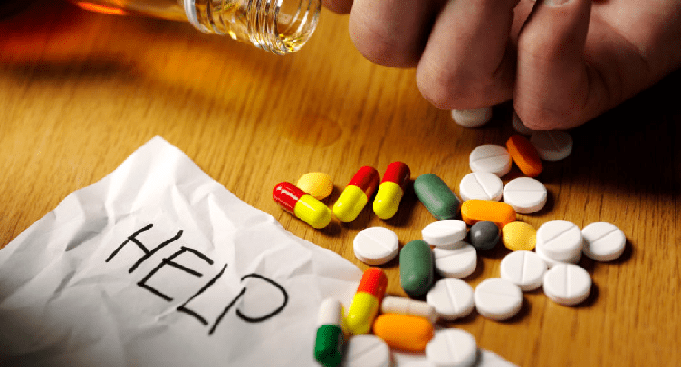

Information on Drug Disorders
Some people are able to use recreational or prescription drugs without ever experiencing negative consequences or dependence. For many others, substance use disorders (SUD) can cause problems at work, home, school, and in relationships, leaving one feeling isolated, ashamed, or helpless. Learning about the nature of drug abuse and addiction may involve learning how it develops, what it looks like, and why it can have such a powerful hold over someone. If you're worried about your own or a friend's or family member's drug use, it's important to know that help is available.

Understanding Drug Use, Misuse, and Dependence
People experiment with drugs for many different reasons, such as curiosity, trying to have a good time, their friends or family are doing it, or in an effort to improve athletic performance. Often, drug use may begin to ease another problem, such as stress, anxiety, or depression. In many cases, there is a fine line between casual use and drug misuse and dependence. The level of casual use to problematic varies by individual and very few dependent people are able to recognize when they have crossed that line. No matter how often or how few drugs are consumed, if drug use is causing problems in one's life, such as at work, school, home, or in relationships, then it is likely there is a drug misuse or dependence problem.Read more
Drug Dependence Impacts the Brain
Drug Dependence impacts the brain in a variety of ways, as each drug produces different physical effects. All misused substances can alter the way the brain looks and functions. The following are examples of how addiction impacts the brain:
- Recreational drugs cause a surge in levels of dopamine in one's brain, which triggers an increase in pleasurable feelings. The brain remembers these pleasurable feelings and wants them to continue.
- Changes in your brain interfere with the ability to think clearly, implement good judgment, manage behavior, and feel normal without drugs.
- Once dependent, the substance takes on the same significance as other survival behaviors, such as eating, drinking, and sleeping.
- Dependence causes the uncontrollable craving to continue use. The desire to use grows more important than anything else, including family, friends, career, and even one's own health and happiness.
- The urge to use is so intense that the mind finds a variety of ways to justify or be in denial of the addiction. A person may drastically underestimate the quantity of drugs they are taking, how much it negatively impacts their life, and the level of control they have over their drug use.
Risk Factors for Dependence
Why do some people become dependent, while others don't? As with many other conditions and diseases, vulnerability to SUD varies from person to person. The signs of dependence differ, but there are specific factors that may make one person more vulnerable to SUDs than others. The following risk factors increase your vulnerability:
- Family history of SUD or misuse
- Abuse, neglect, or other traumatic experiences in childhood
- Mental disorders such as depression and anxiety
- Early misuse of drugs.
- Method of administration—smoking or injecting a drug may increase its addictive potential
Types of Drugs
Adults use and misuse alcohol, illicit drugs and prescription drugs. Common categories of substances misused by adults include the following:
- Alcohol
- Anabolic steroids, known as "juice or roids".
- Bath salts, known as "bloom, cloud nine, scarface, vanilla sky, white lightning".
- Club drugs, such as MDMA, short for 3, 4, Skushi, Sisha, Arizona, Colorado, methylenedioxy, methamphetamine is most commonly known as "Ecstasy" and "Molly," and sometimes called "Adam, beans, clarity, E, hug, love drug, X, XTC".
- Cocaine/crack, known as "blow, bump, C, candy, charlie, coca, coke, snow, flake, rock, toot".
- Dissociative anesthetics, such as phencyclidine/PCP and ketamine, known as "angel dust, boat, cat, K lovely, love boat, vitamin K".
- Hallucinogens such as LSD (mushrooms), known as "acid, buttons, shrooms, yellow sunshines".
- Heroin
- Inhalants, such as gasoline or ammonia for huffing and known as "laughing gas, snappers, poppers, whippets".
- Marijuana, sometimes called "grass, herb, Mary Jane, pot, skunk, and weed" and is smoked in a joint, blunt, bong, or pipe.
- Methamphetamine (Meth) known as "chalk, speed, tina;" (crystal meth) known as "crank, fire, glass, go fast, and ice".
- Tobacco products, including cigarettes, cigars, chewing tobacco.
- Depressants are called "A-minus, barbs, candy, downers, phennies, red birds, reds, sleeping pills, tooies, tranks, yellows, yellow jackets, zombie pills".
- Opioids are called "happy pills, hillbilly heroin, OC, oxy, oxycotton, percs, vikes".
- Stimulants are called "bennies, black beauties, hearts, roses, skippy, speed, the smart drug, uppers, vitamin R".
- Common prescription drugs include Adderall, Alprazolam, Ambien, Ativan, Clonazepam, Hydrocodone, Klonopin, Lorazepam, Methadone, Opiate, Oxycodone, Oxycontin, Painkillers, Percocet, Suboxone, Subutex, Tramadol, Valium, Vicodin, Xanax.
Adapted from: The National Institute on Drug Abuse (NIDA)